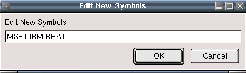

10 - 20 minute delayed quotes from yahoo supported exchanges are available with this plugin. Pressing the "New" button allows you to enter new symbols to update.
Pressing the "New" button will bring up the following dialog.
Here we will be adding MSFT, IBM, RHAT to our database.
Here is what it looks like when entering new symbols. Leave a space between the symbols.
